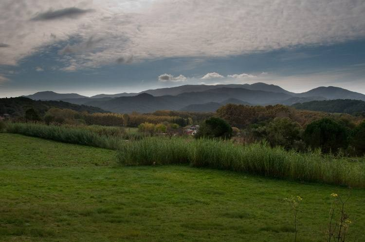

Ruta · Gualba
Des de l’estació, aquest camí ens acosta al poble de Gualba , tot passejant amb un suau desnivell de pujada, sempre amb el Montseny com a decorat de fons. És el camí ral, camí que permetia accedir…